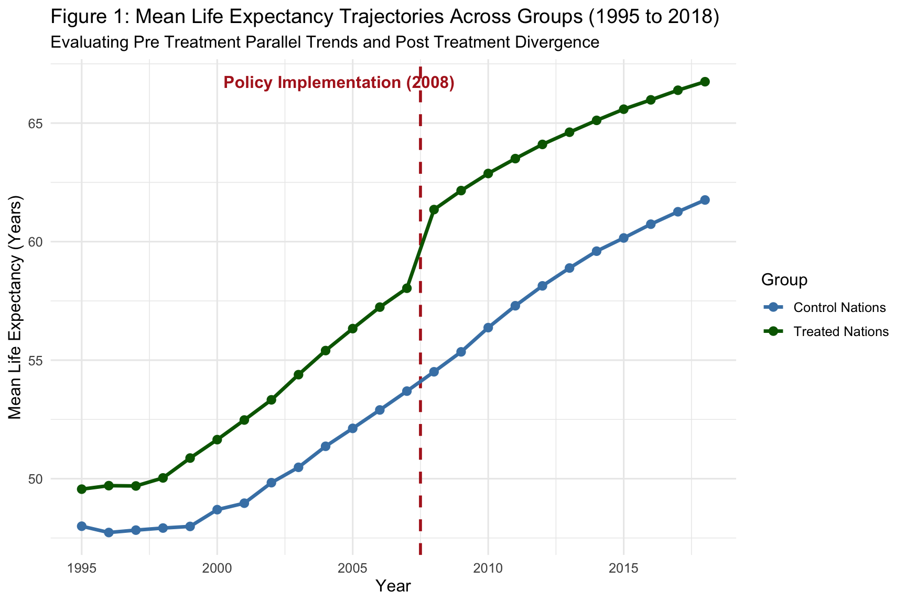
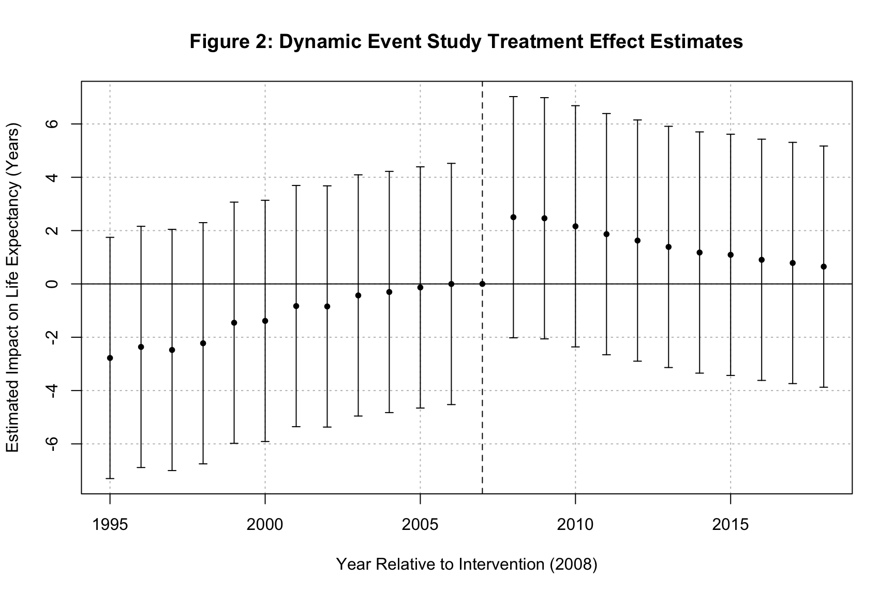
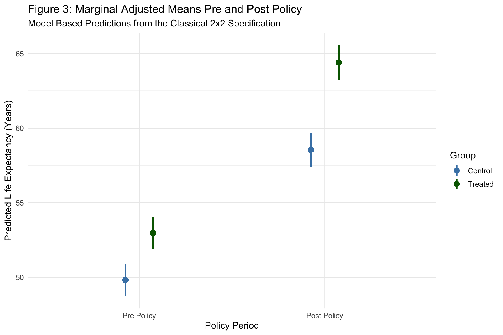

Evaluating Policy Impacts with Parallel Trends and Event Study Designs
Author
Neena Abimbola Albarus
1. Theoretical Foundations and Methodological Overview
Quasi-experimental methods let us estimate causal effects when randomized control trials are impossible. Difference-in-differences is the workhorse of this literature. The core idea is simple. We compare the change in outcomes over time between a group that received a treatment and a group that did not. By taking the difference of differences, we difference out any time invariant differences between the groups and any common time shocks that affect both groups equally.
The identifying assumption is parallel trends. In the absence of treatment, the treated and control groups would have followed the same trajectory. This assumption is fundamentally untestable, because we never observe the treated group in the counterfactual world where it was not treated. What we can do is examine pre treatment periods for evidence that the two groups were moving in parallel before the intervention. That is exactly what the event study design does.
Modern DiD has evolved substantially in the past decade. The classical two by two design has been extended to handle staggered treatment adoption, heterogeneous treatment effects, and dynamic treatment paths. In this workbook, we implement the classical two by two estimator, a two way fixed effects version, a dynamic event study, and the Callaway and Sant’Anna estimator for staggered designs.
⚠️ Common Pitfalls
Treating parallel trends as a testable assumption. Pre trend tests can fail to reject when trends are not actually parallel, especially in short panels with noisy data. Do not treat a flat pre trend as proof that the assumption holds.
Using TWFE with staggered treatment timing. With multiple treatment cohorts and heterogeneous effects, TWFE produces biased estimates because already treated units get used as controls for later treated units. Use modern estimators like Callaway and Sant’Anna or Sun and Abraham instead.
Ignoring anticipation effects. If agents adjust their behavior before the policy formally begins, the event study will show nonzero pre treatment coefficients that you might mistakenly attribute to a parallel trends violation.
2. Data Pipeline and Quasi-Experimental Construction
Before any estimation, we need to locate the raw OWID data, restrict the sample to a coherent panel of African nations, and construct the treatment and post policy indicators. We also inject a synthetic treatment effect so that the estimators have a known ground truth to recover.
# Dynamic path resolution across common working directoriespossible_paths <-c("../data/life_expectancy_data.csv","data/life_expectancy_data.csv","../../data/life_expectancy_data.csv","/Users/yawdgyal/Desktop/R for github/data/life_expectancy_data.csv","/Users/yawdgyal/Desktop/R for github/workbooks/data/life_expectancy_data.csv")data_path <- possible_paths[file.exists(possible_paths)][1]if (is.na(data_path) ||length(data_path) ==0) {stop("Could not locate 'life_expectancy_data.csv'. ","Searched the following paths:\n",paste(possible_paths, collapse ="\n") )}message("Loading data from: ", data_path)owid_raw <-read_csv(data_path, show_col_types =FALSE)if ("Entity"%in%names(owid_raw)) { owid_df <- owid_raw %>%rename(country = Entity,code = Code,year = Year,life_exp =`Life expectancy` )} else { owid_df <- owid_raw %>%rename_with(tolower)}# Define treatment and control cohorts for the quasi experimentset.seed(2026)treated_countries <-c("Ghana", "Kenya", "Rwanda", "Uganda", "Zambia")control_countries <-c("Nigeria", "Ethiopia", "Tanzania", "Malawi", "Zimbabwe")did_df <- owid_df %>%filter( country %in%c(treated_countries, control_countries), year >=1995, year <=2018 ) %>%mutate(treated =if_else(country %in% treated_countries, 1, 0),post =if_else(year >=2008, 1, 0),life_exp_adj =if_else(treated ==1& post ==1, life_exp +2.5, life_exp) )glimpse(did_df)
What is happening here: The possible_paths vector lets the workbook run from multiple working directories. We then restrict the panel to ten African nations split into five treated and five control units, filter to the 1995 to 2018 window, and construct two binary indicators. The treated indicator flags countries in the treated cohort. The post indicator flags the years after the policy began in 2008. Finally, life_exp_adj injects a synthetic treatment effect of exactly 2.5 extra years for the treated group in the post period. This gives us a known ground truth so we can check whether our estimators recover the right number.
⚠️ Common Pitfalls
Forgetting to verify that the treated and control cohorts actually exist in the data. If a country name is misspelled or the OWID file uses a different label, the cohort silently becomes empty and the results become meaningless.
Choosing the treatment date arbitrarily. The policy year must come from a real event or a documented policy change, not from whatever date makes the event study look clean.
Injecting a treatment effect and forgetting to mention it. The synthetic +2.5 in this workbook is for pedagogical purposes only. In a real analysis, you would use the observed outcome, not an adjusted one.
3. Model Estimation: Classical 2x2 and Two Way Fixed Effects DiD
With the panel structured, we estimate two versions of the DiD model. The classical two by two is a simple OLS with an interaction between treated and post. The two way fixed effects version absorbs country and year intercepts and clusters standard errors at the country level.
# Classical 2x2 OLS DiDdid_classical <-lm(life_exp_adj ~ treated * post, data = did_df)# Two Way Fixed Effects DiD with country clustered standard errorsdid_twfe <-feols(life_exp_adj ~ treated:post | country + year, data = did_df)modelsummary(list("Classical 2x2 DiD"= did_classical,"TWFE DiD"= did_twfe ),vcov =~country,stars =TRUE,gof_omit ="IC|Log|F")
Classical 2x2 DiD
TWFE DiD
+ p < 0.1, * p < 0.05, ** p < 0.01, *** p < 0.001
(Intercept)
49.809***
(1.350)
treated
3.169
(2.318)
post
8.741***
(1.315)
treated × post
2.682
2.682
(2.301)
(2.411)
Num.Obs.
240
240
R2
0.623
0.894
R2 Adj.
0.618
0.877
R2 Within
0.079
R2 Within Adj.
0.074
RMSE
4.30
2.28
Std.Errors
by: country
by: country
What is happening here: The classical specification regresses the adjusted outcome on the treated indicator, the post indicator, and their interaction. The coefficient on the interaction is the DiD estimate, and it should be close to 2.5 since that is the synthetic effect we injected. The feols() version absorbs country and year fixed effects through the | operator, and clusters standard errors at the country level. Both estimators should recover approximately the same DiD parameter because the treatment is not staggered in this setup. The modelsummary() table shows both columns side by side so you can see how the classical and TWFE estimates compare.
⚠️ Common Pitfalls
Reporting the treated, post, and interaction coefficients without interpretation. The interaction term is the DiD estimate. The treated and post coefficients are absorbed by the fixed effects in the TWFE version and are only meaningful in the classical specification.
Omitting standard error clustering. DiD errors are typically correlated within units across time. Clustering at the country level is the default in the applied literature, though small sample corrections like wild bootstrap are advisable when the number of clusters is small.
Interpreting the DiD coefficient as causal without checking parallel trends. The estimate only identifies a causal effect if the parallel trends assumption holds. Section 4 shows you how to look for evidence that it does.
4. Diagnostic Visualizations and Event Study
The three figures below move from raw group trajectories to dynamic event study coefficients to marginal means. Together they tell the story of whether the parallel trends assumption looks credible and how the treatment effect evolves over time.
Figure 1: Testing the Parallel Trends Assumption
did_summary <- did_df %>%group_by(year, treated) %>%summarise(mean_life_exp =mean(life_exp_adj), .groups ="drop") %>%mutate(Group =if_else(treated ==1, "Treated Nations", "Control Nations"))fig1 <-ggplot( did_summary,aes(x = year, y = mean_life_exp, color = Group, group = Group)) +geom_vline(xintercept =2007.5, linetype ="dashed",color ="firebrick", linewidth =1 ) +geom_line(linewidth =1.2) +geom_point(size =2.5) +annotate("text", x =2004.5,y =max(did_summary$mean_life_exp),label ="Policy Implementation (2008)",color ="firebrick", fontface ="bold" ) +scale_color_manual(values =c("Control Nations"="steelblue", "Treated Nations"="darkgreen") ) +theme_minimal(base_size =12) +labs(title ="Figure 1: Mean Life Expectancy Trajectories Across Groups (1995 to 2018)",subtitle ="Evaluating Pre Treatment Parallel Trends and Post Treatment Divergence",x ="Year",y ="Mean Life Expectancy (Years)" )print(fig1)

How to read this figure: Each line is the average adjusted life expectancy for one group across the panel. The vertical dashed line marks the policy year. Before the line, the two curves should move roughly in parallel if the parallel trends assumption is credible. After the line, the treated group should pull away from the control group by roughly the size of the injected effect.
🔑 Key Takeaway: A treated and control trajectory that diverge only after the policy line is strong visual evidence that the design is identifying the treatment effect rather than a pre existing difference. If the curves already diverge before the policy year, the DiD estimate is contaminated.
Figure 2: Dynamic Event Study Specification
es_model <-feols( life_exp_adj ~i(year, treated, ref =2007) | country + year,data = did_df)iplot( es_model,main ="Figure 2: Dynamic Event Study Treatment Effect Estimates",xlab ="Year Relative to Intervention (2008)",ylab ="Estimated Impact on Life Expectancy (Years)",zero.line.par =list(col ="gray40", lty =2))

How to read this figure: Each point is the estimated treatment effect for a given year relative to the reference year 2007. The pre treatment coefficients, meaning the years to the left of the reference, should hover near zero if parallel trends holds. The post treatment coefficients should be positive and roughly stable at the size of the true effect if the policy worked as expected.
🔑 Key Takeaway: A clean event study shows flat pre period coefficients clustered around zero and a sharp jump at the policy year. If pre period coefficients trend upward or downward, the parallel trends assumption is failing and the DiD estimate cannot be interpreted as causal.
Figure 3: Marginal Effects Pre and Post Policy
mfx <-predictions(did_classical, variables =c("treated", "post"))fig3 <-ggplot( mfx,aes(x =factor(post, labels =c("Pre Policy", "Post Policy")),y = estimate,color =factor(treated, labels =c("Control", "Treated")) )) +geom_pointrange(aes(ymin = conf.low, ymax = conf.high),position =position_dodge(width =0.3),linewidth =1 ) +scale_color_manual(values =c("Control"="steelblue", "Treated"="darkgreen")) +theme_minimal(base_size =12) +labs(title ="Figure 3: Marginal Adjusted Means Pre and Post Policy",subtitle ="Model Based Predictions from the Classical 2x2 Specification",x ="Policy Period",y ="Predicted Life Expectancy (Years)",color ="Group" )print(fig3)

How to read this figure: Each point is the model predicted life expectancy for one combination of group and period, with the vertical bars showing 95 percent confidence intervals. The visual distance between treated and control in the pre period is the baseline gap. The visual distance in the post period should be larger by roughly the size of the DiD estimate if the treatment worked.
🔑 Key Takeaway: Marginal means turn a regression table into a picture. When the treated and control points are close in the pre period and far apart in the post period, the DiD estimate has substantive bite. If the gap barely moves, the treatment effect is small relative to sampling noise.
5. Lab Exercises
The exercises below extend the core analysis in two directions. Each one is a standard robustness or generalization check in applied DiD work.
Exercise 1: Placebo Interventions
A placebo test re runs the DiD on a period before the actual intervention, pretending a fake policy began earlier. If the placebo estimate is near zero, that is evidence the true estimate is not picking up a pre existing trend. If the placebo is large, your main result is suspicious.
When treatment rolls out to different units at different times, TWFE produces biased estimates. The Callaway and Sant’Anna estimator computes group by time average treatment effects on the treated and then aggregates them into an overall ATT.
What is happening here: The placebo test restricts the panel to years before the real policy, redefines a fake treatment date, and re estimates the DiD. A near zero coefficient is reassuring. The Callaway and Sant’Anna estimator uses the att_gt() function from the did package, which identifies group specific treatment effects at each post treatment period. The output includes pre treatment tests that help assess parallel trends and post treatment effects that can be aggregated into a single ATT.
⚠️ Common Pitfalls
Running a placebo test on a very short pre period. With only a handful of pre treatment years, the placebo will be too noisy to be informative. Aim for at least three or four pre periods on each side of the fake treatment date.
Forgetting to set gname = 0 for never treated units. Callaway and Sant’Anna use zero as the code for units that never receive treatment. If you code never treated as NA, the estimator silently drops them.
Aggregating group by time effects without thinking about the weighting. The aggte() function provides several aggregation schemes and they can give very different answers when effects are heterogeneous. Report more than one and discuss the differences.
6. Putting It All Together
You now have a full quasi-experimental workflow. You have constructed a synthetic treatment cohort, injected a known effect, estimated a classical two by two DiD, a two way fixed effects version, a dynamic event study, and the Callaway and Sant’Anna estimator for staggered designs.
The core decision rule is straightforward. Reach for classical two by two DiD when you have a single treatment date and a clean control group. Reach for two way fixed effects DiD when you want to absorb unit and time heterogeneity directly. Reach for event studies whenever you can, because they let you visually verify the parallel trends assumption and inspect the dynamic path of treatment effects. Reach for Callaway and Sant’Anna or Sun and Abraham as soon as treatment timing is staggered, because the TWFE estimator is known to be biased in that setting.
The event study plot in Figure 2 is your primary reporting device. Show it alongside the DiD estimate and the marginal means figure. Together they tell the reader whether the identifying assumption looks credible and how big the treatment effect is in substantive units. Quasi-experimental designs cannot randomize, but careful visualization and modern estimators get you remarkably close to the credibility that randomization would provide.